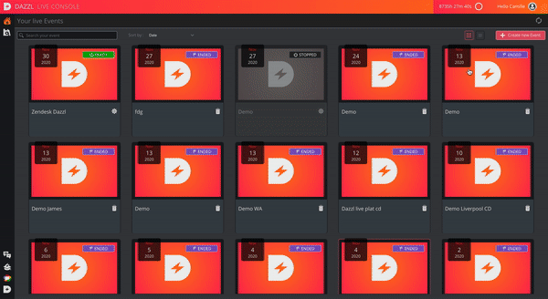

How to create a new event ?
To create a new event, you must first create an account and log in. Once on the main page, you can create a new event by following these steps:
- Click on "create new event".
- Add a title, which represents the event you want to broadcast. This title will also be displayed for your contributors: choose it carefully.
- Chose the location of your event.
- Chose the maximum quality of your event.
- Add a start date, and an end date. The channel can only be started and set up between these dates, so don't hesitate to allow a wide range of dates.
- You can also add a description to your event.
Once everything looks good, click on "create the event".
In order to be able to add your contributors make your preparations and start broadcasting, you must start the event which will be stopped by default.
You will then be able to navigate between the different tabs and start preparing your live.
You can modify your event parameters at any time, by clicking on the settings icon.
